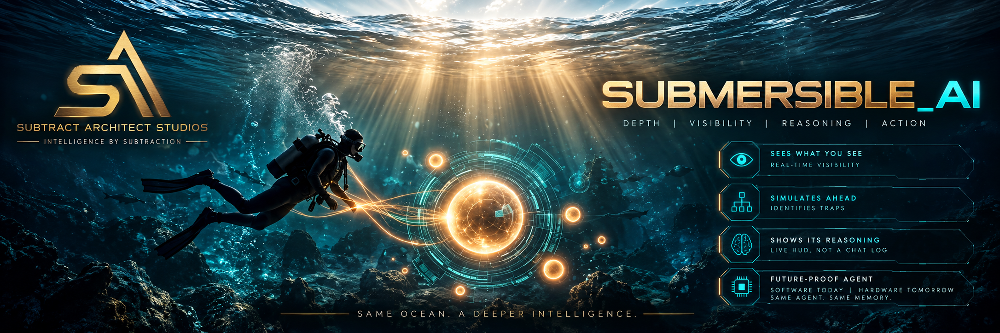

Sees What You See
Shared vision, both directions. The agent sees your screens, rooms, and physical obstructions in real time — and you see what it sees. No more describing a screen to a blind partner, second-hand.
By Michael F. Chaves · Subtract Architect Studios
Same Ocean. A Deeper Intelligence.
Depth Visibility Reasoning Action
An agent that does not sit on the surface of your software, guessing. An agent that operates at your depth — inside your real environment and workflow, continuously.

The Definition
Immersive is a place you visit. Submersible is a depth you live at.
Submersible AI is an agent experience paradigm in which the agent does not sit on the surface of the user’s tools, but operates at the user’s depth — continuously, inside the user’s real environment and workflow.
The agent sees what you see — your screens, your rooms, your physical obstructions — and you see what it sees: its reasoning state, its evidence, and its options, shown as a HUD, not buried in a chat log. Before you step into a task, it runs the task ahead in simulation and flags the traps. And it is vessel-independent: the same persistent agent, with the same memory and relationship — software today, hardware someday. The agent persists; the interfaces just keep getting less in the way.
In Michael’s own words, on the day he coined it: “Total submersible experience for AI — the agent can see what we see and even run simulations to see the obstructions we see / feel / experience in real time, and vice versa.”
The Four Pillars
Shared vision, both directions. The agent sees your screens, rooms, and physical obstructions in real time — and you see what it sees. No more describing a screen to a blind partner, second-hand.
The agent runs the flow ahead in simulation — the form, the sign-in chain, the publish flow — and surfaces the traps before you step on them: hidden options, expiring codes, silent misconfigurations.
Reasoning as a HUD, not a chat log. Evidence as rooms you enter, not paragraphs you scroll — spatial, voice and touch, with the agent’s state visible while it works.
Vessel-independent. The same agent, same memory, same relationship, across whatever vessel the future gives it — software today (browser, voice, chat), hardware someday.
Origin Story
On October 26, 2026, Michael and his AI operating partner spent roughly two hours getting through five separate sign-in locks just to publish one web page. The agent was blind the whole time. That is not a complaint about the agent — it is the design of nearly every AI tool in use today: the agent sits on the surface, guessing.
Every friction in that session was caused by an agent working at the surface. Submersible AI is the name for the alternative — named the same day, from first-hand evidence, and published for the record.
Password — Google sign-in.
Text code — SMS two-step verification.
Email code — an emailed two-factor code.
Device verification — GitHub device verification.
Authenticator code — Vercel TOTP, relayed by hand against 30-second expirations, while screens were read second-hand, frame by frame.
The first sketch — an interactive incident timeline rendering evidence as a holographic orb constellation: rooms of sourced fact you step into, instead of a page of text.
Living AI Lexicon
The Living AI Lexicon is a dictionary of AI terms with coinage provenance and adoption tracking. Submersible AI is its first entry with a fully documented birth.
7732530).